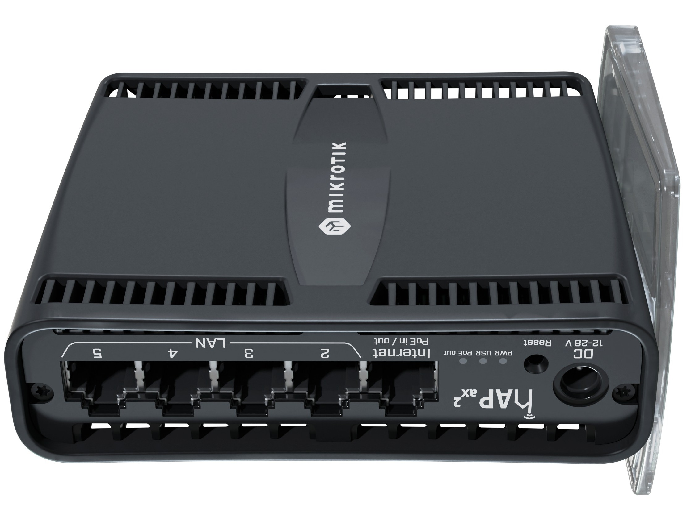
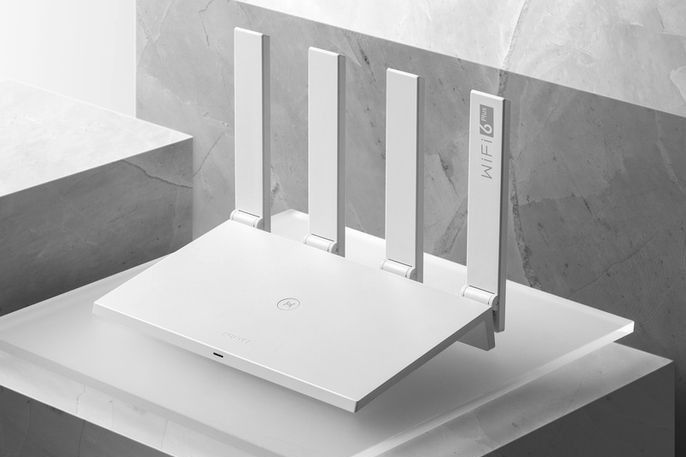

Domáci Server Setup
Prehľad hardvéru a služieb v domácom prostredí
Hardvér

MikroTik hAP ac2
Router
- Dual-band WiFi AC
- 5x Gigabit porty
- RouterOS
- VPN server

Huawei AX3 Pro
WiFi 6 Access Point
- WiFi 6 (802.11ax)
- Dual-band
- OFDMA & MU-MIMO
- Rozšírenie pokrytia

Orange Pi 5
Server / SBC
- Rockchip RK3588S
- 8GB RAM
- NVMe SSD
- DietPi OS
Služby a Aplikácie
Cloudflared
Cloudflare Tunnel pre bezpečný prístup k domácim službám bez otvorenia portov.
ZeroTier
Software-defined networking pre vytvorenie virtuálnej privátnej siete.
WireGuard
Moderný VPN protokol pre rýchle a bezpečné pripojenie k domácej sieti.
AdGuard Home
Network-wide ad blocker a DNS server s pokročilým filtrovaním.
Docker
Kontajnerová platforma pre jednoduché nasadenie rôznych aplikácií a služieb.
Nginx Proxy
Reverse proxy a load balancer pre správu web služieb a SSL terminácii.
Sieťová Topológia
Internet
MikroTik hAP ac2
Router / Firewall
Huawei AX3 Pro
WiFi 6 AP
Orange Pi 5
Services Server
Klientske zariadenia
PC, mobile, IoT